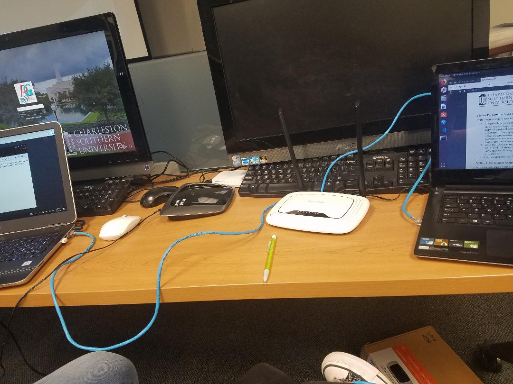
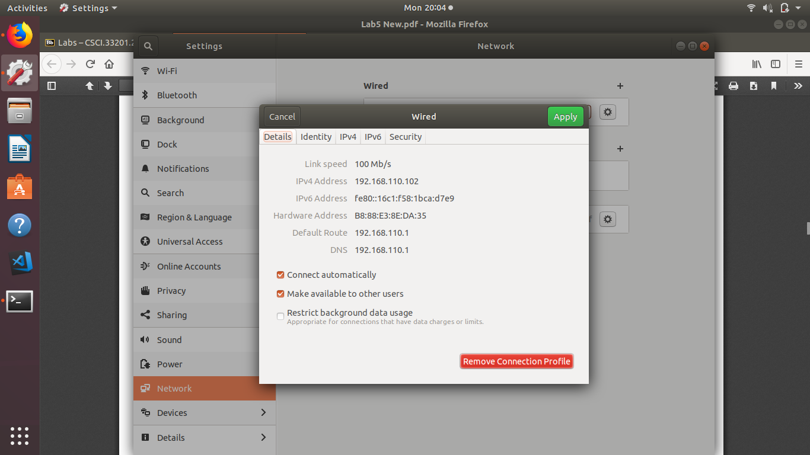
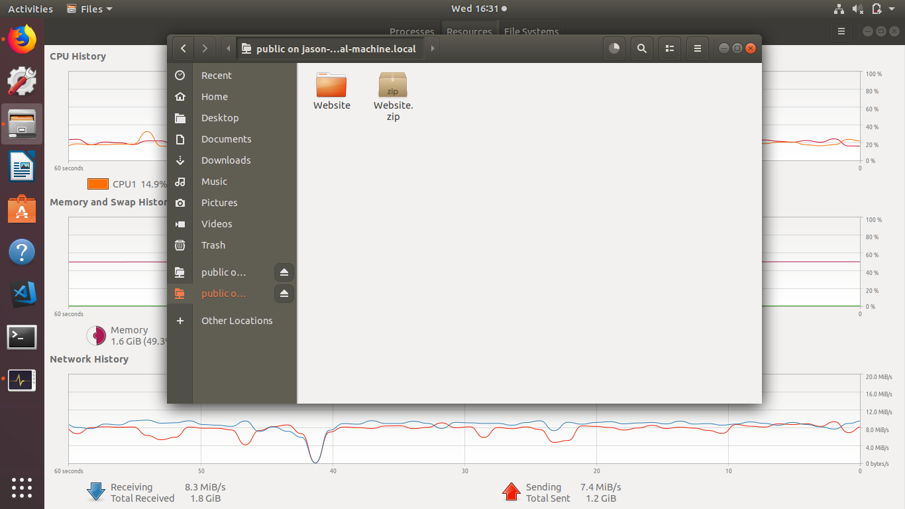
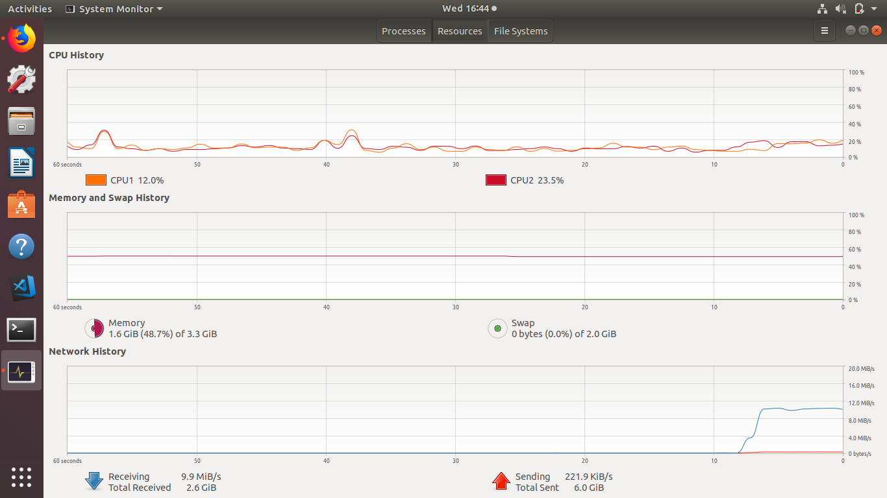

1. In order to construct the LAN using the one switch, here are the steps we did in order.
- We got the router and plugged in an ethernet cable into the wall and in the router.
- Next, we went to the router's configuration page and changed the IP address to 192.168.110.1
- We then plugged in our ethernet cables into ports 1 and 2 of the router and connected them to our computers
- We turned off the Wifi to get the wired connection so there were no problems.
- We then reset the router and both connected to the ethernet.
- Once we were connected, we both checked the status of the wired connection and made sure that
the IP addresses were matching.
- Finally, before we tested the file sharing, we went to "other locations" to make sure we were connected.
- We used ethernet network protocol with physical data lines.
Here is the picture of the setting of the LAN with one switch.

The two cables are the ones we made and they are plugged in to ports one and two on the back.
Here is how we constructed the LAN TCP/IP addresses
- We went to the configuration page for the router.
- We went to the Network tab and clicked on the LAN
- Next, we changed the IP address to 192.168.110.1 and the subnet masl we kept the same at 255.255.255.0
Here are the pictures of the results after we changed the IP address

Here is the way we did our experiment and the results
- We grabbed a 4GB test file off of the internet
- We set up our file sharing in the "other locations" tab
- Once we were connected, we clicked on the "public" file and opened it with other files
- Once we got there, we dragged the file in the folder, and it started to download
- We ran into a couple of problems with computers freezing in the middle of transmission.
Here is the picture of the system monitor and file sharing proof


| File size |
Transmission Rate |
Time consumed |
| 4GB |
10.0 Mbps |
7min 41sec |
This is the single table of our results. It took 7 minutes and 41 seconds to send and it was transmitting between 4Mbps
to 10.0 Mbps. It took two attempts to transmit. We had to transmit each file at separate times or the computers
would freeze.
Home